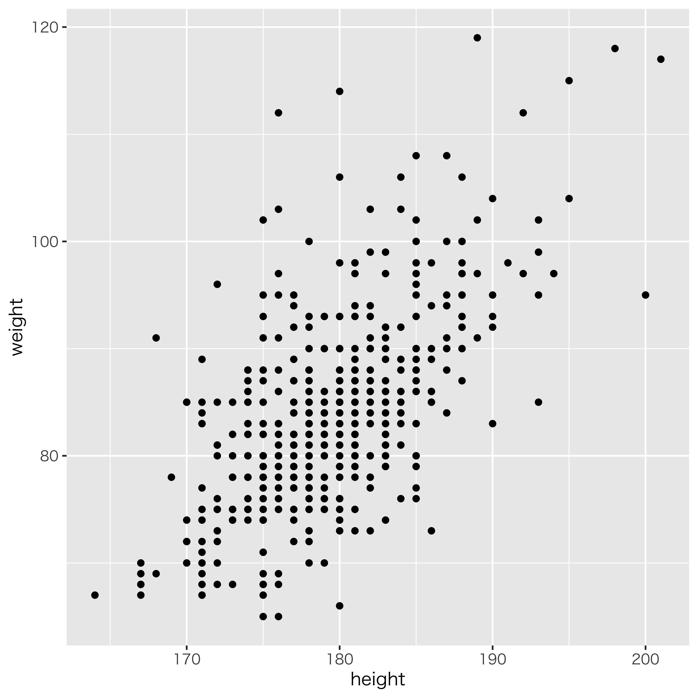
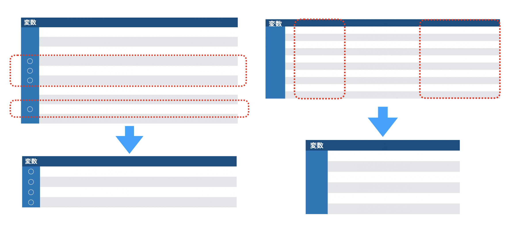
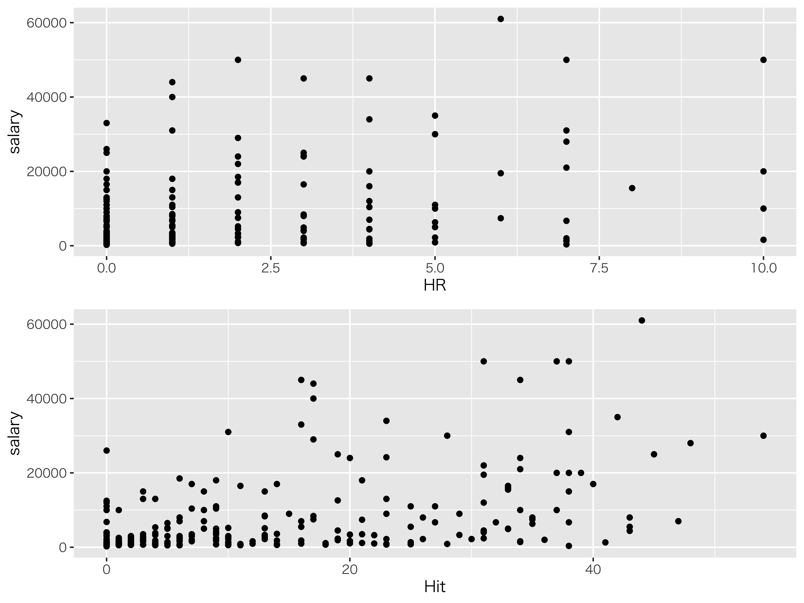

Chapter 3 Rをつかった回帰分析
さてここまでは，回帰分析や重回帰分析の仕組みを言葉で説明してきましたが，自分で計算できなければ絵に描いた餅です。重回帰分析の回帰係数を求める方法については特に説明してきませんでしたが，Rで計算する時は単回帰・重回帰の区別なく表現できるので，ここで一気に習得してしまいましょう。
3.1 Rの環境再確認
第\[chapter5\]章でRの使い方について解説してきました。思い出しながら進めていきましょう。
3.1.1 環境の準備(確認)
まずは環境の準備です。既にRやRStudioのインストールは終わっているものとして話を進めます14。
次の3つのステップをたどって，実行の準備をしてください。
3.1.1.0.1 RStudioの起動
RStudioを起動してください。パッケージのインストールをするときなど，管理人権限が必要になるケースがありますので，Windowsユーザは管理人として実行するようにしたほうが良いかもしれません。
3.1.1.0.2 プロジェクトを開く
プロジェクトは前回作成したもので結構です。前回と同じフォルダの中で，新しくスクリプトファイルを作っていくことにしましょう。メニューからプロジェクトを開くを選び(FIle\(\to\)Open
Project)，目的のフォルダのにある.Rprojファイルを選択してください。それがプロジェクト情報を持っているファイルで，それを選択することでワーキングディレクトリが当該フォルダにセットされます。プロジェクトが開いたかどうかはRStudioの右上やメニューバーなどで，確認できます。
3.1.1.0.3 Rスクリプトを開く
今日のコードを書くためのRスクリプトファイルを準備します。File > NewFile > R Scriptと進み，何も書いてないRスクリプトの画面を表示させてください。真っ白いファイルが開いたら問題ありません。Rmdファイルで書き進めてもらっても結構です。
これでスクリプトのところにコードを書いていく準備ができました。
統計に関するデータは，手入力するのが嫌になる程度にはたくさんのデータがあるはずです。今回もデータをファイルから読み込んで使うことにします。ファイルから読み込むときに注意が必要なのが，テキストエンコードです。ASCIIデータを読み込みますが，エンコードが違うと文字化けが生じてしまいます15。OSがWindowsで世界非標準のエンコードShift-JIS(CP-932)を使っている人は，世界標準のUTF-8を指定して読み込む必要があるかもしれません。
今回，第\[chapter5\]章の課題と同じ野球選手のデータを読み込んでみましょう。次の3行を実行してください。
{#code::11_01 .c++ language="c++" label="code::11_01" caption="環境の初期化とパッケージ，ファイルの読み込み"} rm(list=ls()) library(tidyverse) dat <- read_csv("baseball2020.csv",na="NA") summary(dat)
3.1.1.0.4 コード解説
- 1行目
環境Environmentを初期化するコードです。Rmd形式で書いている人はこの行は書かないようにしてください16。
- 2行目
tidyverseパッケージを読み込んでいます。このパッケージはファイルの読み込みや並べ替え操作など，便利な機能がまとめられたものです。- 3行目
baseball2020.csvというファイルを読み込んでいます。このファイルがプロジェクトフォルダ内にあることを確認してから実行してください。文字化けが生じるようでしたら，locale=locale(encoding=”utf8")をオプションとして追加すると良いでしょう。- 4行目
読み込んだデータの記述統計量など，基本的な要約を行っています。
3.1.2 散布図の描画
データが手に入ったとき，最初にすることは可視化です。データは図にするという約束は忘れないでくださいね。 今回は様々な変数があるのですが，ここで打者の身長と体重のデータだけ抜き出して図にしてみたいと思います。
{#code::11_02 .c++ language="c++" label="code::11_02" caption="環境の初期化とパッケージ，ファイルの読み込み"} batter <- dat %>% dplyr::filter(position != "投手") %>% dplyr::select(height, weight) g <- ggplot(batter, aes(x = height, y = weight)) g <- g + geom_point() g
3.1.2.0.1 コード解説
- 1-3行目
batterというオブジェクトを作っています。これはdatオブジェクトを加工して作るのですが，詳しくはこの後で説明します。- 4行目
batterオブジェクトを使って，x軸をheight変数，y軸をweight変数をするキャンパスを指定します。- 5行目
キャンパスに点を打つように
geom_pointします。- 6行目
描画オブジェクト
gを表示します。
結果的に図1.1のような図ができていればOKです。

身長と体重のデータ
さて1-3行目の操作ですが，ここでやりたかったことはdatオブジェクトの中から打者のデータに限って，身長と体重の変数を抜き出すことでした。
これらの操作はtidyverseパッケージに含まれるdplyrパッケージのfilter関数とselect関数で実装されます。この両者の違いは，抜き出す方向の違いです。
filter関数は，データ全体にフィルタをかけて，該当するレコード(オブザベーション，ケース，個人)を抜き出します。言い換えれば行の選択なのです。
ある変数について条件に該当すれば，そのデータは抜き出すというのがこの関数の仕事であり，今回はposition!="投手"という条件で抜き出しています。ここで!=という記号が出てきましたが，これは\(\neq\)の意味です。\(\neq\)が入力できないので，!で否定を表すようになっているのですね。逆にこの条件に合致していれば，という場合は==とイコールを重ねて使います。イコールが1つしかなければ，Rは代入せよという意味，すなわち<-と同じ意味に解釈してしまうのです17ちなみに，このデータは投手のデータと野手のデータが含まれており，positionは守備位置を表しますから，野手のデータは捕手か内野手か外野手ということになります。あるいは投手でないのが野手です。後者の条件のほうが簡単なのでこのようにしています。
select関数は，該当する変数だけ抜き出したいときに使います。今回は身長heightと体重weightが欲しかったのでその2つを書いています。
この関数の抜き出し方は，言い換えれば列方向の抜き出しです。filterとselectの違いをしっかり理解しておいてください(図1.2)

フィルタとセレクトの違い
このコードにはさらに重要なポイントがあります。ひとつはパイプ演算子%>%です。これは前のオブジェクトを後の関数の第一引数に渡す，という意味があります。例えば，\(y=f(x)\)という変換をし，さらに\(z=g(y)\)という変換をしたい場合，頭の中では\(x\to y \to z\)と考えていると思いますが，コードで書くと\(y \leftarrow x\)で\(z \leftarrow y\)という逆の向きで考えなければなりません。あるいは\(z=g(f(x))\)と内側にくり入れていくので，見た目にわかりにくくなります。この思考の流れに沿った変換にするようにつなげるのが
%>%
です。ここではdatオブジェクトをfilterに渡し，行を選択したものをさらに渡してselectで列選択，という処理をしています。それを最後にbatterに代入する(<-)わけですね。
また，filterやselectにはdplyr::という記号が前についています。これはdplyrパッケージのfilter関数，select関数を使ってくださいね，というパッケージ名の指定を行っているところです。filterやselectといった関数名は非常に一般的ですから，他のパッケージが使っていて関数名が重複してしまう可能性があります。実際select関数はよく重複するのです。それを避けるための措置だと思ってください。
前置きが長くなりました。ともかくこれで欲しいデータの散布図が書け，どうやら正の相関がありそうだということがわかりました。
直線関係を仮定しても良さそうです。ちなみに次のコードを書くとggplotで直線を書くことができますよ。
{#code::11_03 .c++ language="c++" label="code::11_03" caption="回帰線を引く"} g <- g + geom_smooth(method = "lm", se = FALSE) g
3.1.2.0.2 コード解説
- 1行目
散布図を書いているオブジェクト
gにスムージング関数geom_smoothでデータにスムーズな線を引く。線の引き方はlmすなわち。- 2行目
オブジェクト
gの描画
3.2 線形回帰の実行
それではここから回帰分析を行います。回帰分析は線形関数を当てはめるのでと呼ばれますが，これの頭文字をとったlm関数が線形回帰モデルです。次のcode::[code::11_04]を実行してみましょう。
{#code::11_04 .c++ language="c++" label="code::11_04" caption="回帰分析の実行"} result <- lm(weight ~ height, data= batter) summary(result)
3.2.0.0.1 コード解説
- 1行目
lm関数に回帰式とデータを入れて分析を実行し，その結果をresultオブジェクトに代入する。ちなみに~はチルダといいます18。- 2行目
分析結果の要約を出力させる。
ここで重要なのは，1行目の回帰式の表現です。Rでは\(y\sim x\)という書き方で，\(y=f(x)\)を表現します。これは回帰式に限らず，一般的に従属変数\(y\)と独立変数\(x\)の関係を\(\sim\)でつなげる，というの書き方なのです。今回はlmという関数を使って表現しましたが，線形モデルではない関数で独立変数，従属変数の関係を書く時もy ~ xで表現します。この表記に慣れると，あの分析もこの分析も，形としては\(y=f(x)\)なんだな，ということがわかりやすくていいですね。今回は，体重を身長で予測したということになっています。
この分析の出力結果が出力\[RS:out11_01\]の通りです。
回帰分析の出力結果out11_01
Call:
lm(formula = weight ~ height, data = batter)
Residuals:
Min 1Q Median 3Q Max
-18.7539 -4.5315 -0.6586 3.4208 31.3732
Coefficients:
Estimate Std. Error t value Pr(>|t|)
(Intercept) -100.96483 11.01370 -9.167 <2e-16 ***
height 1.03177 0.06135 16.818 <2e-16 ***
---
Signif. codes: 0 ‘***’ 0.001 ‘**’ 0.01 ‘*’ 0.05 ‘.’ 0.1 ‘ ’ 1
Residual standard error: 7.214 on 453 degrees of freedom
Multiple R-squared: 0.3844, Adjusted R-squared: 0.383
F-statistic: 282.9 on 1 and 453 DF, p-value: < 2.2e-16何やら色々出ていますが，順に確認していきましょう。まずResidualsとありますが，ここは残差\(e_i\)の記述統計情報を表しています。どれぐらい残差が大きく出るのか，確認すると良いでしょう。
次のCoefficientesは係数という意味です。ここに回帰係数が出ています。少しみにくいかもしれませんが，表形式になっていて，Estimateと書かれたところが推定値，今回知りたい回帰係数の値になっています。
回帰式は次のようになります。
\[\hat{y} = -100.96483 + 1.03177 \times height\]
どの数字が結果の何に対応しているか確認しておいてください。また，この式が得られたということは身長のところに新しい数字を入れると体重の予測ができるということもわかってもらえると思います。
その他にもいろいろな情報が出ていますが，その内容は後期でお話しする推測統計に関するところですので，今のところはまだ知らなくてOKです19。
それよりも大事なのは下から二行目にある，Multiple R-squaredというところです。これがいわゆる\(R^2\)値であり，モデルのを表しています。今回は\(R^2=0.3844\)ですから，予測値\(\hat{y}\)と従属変数\(y\)の相関係数が0.62ぐらい，分散説明率が38.4%
ぐらいだったということがわかります。悪い当てはまとしては，やや悪いといったところでしょうか。
3.3 残差からわかること
今回のlm関数から返される結果を格納したオブジェクトの中には，他にも予測値\(\hat{y_i}\)や残差\(e_i\)といった情報が含まれています。それらが架空の値ではなく，算出されたここの値であるということを確認するために，表示させてみましょう。
{#code::11_05 .c++ language="c++" label="code::11_05" caption="回帰分析のその他の情報"} batter <- batter %>% dplyr::mutate(residuals = result$residuals, yhat = result$fitted.values) batter summary(batter) plot(batter) cor(batter)
3.3.0.0.1 コード解説
- 1-3行目
batterオブジェクトにbatterオブジェクトを加工したものを上書きしていきます。加工内容は，dplyrパッケージのmutate関数を使って変数を追加することです。追加する変数名はresidualsとyhatで，residualsにはresultオブジェクトのresiduals変数を，yhatにはresultオブジェクトのfitted.values変数をあてがっています。- 4行目
上書きされた
batterオブジェクトを表示させています。長くなりますので，上の方の一部分だけが表示されます。- 5行目
上書きされた
batterオブジェクトの要約統計量を表示させています。- 6行目
batterオブジェクトのプロットを描いています。- 7行目
batterオブジェクトの相関係数を計算しています。
回帰分析の結果を代入したオブジェクトresultには，residuals変数として残差が含まれています。同じくfitted.values変数として予測値が含まれています。4行目の出力結果の一部を見てみましょう(出力\[RS:out11_02\])。
回帰分析の出力結果out11_02
# A tibble: 455 x 4
height weight residuals yhat
<dbl> <dbl> <dbl> <dbl>
1 170 72 -2.44 74.4
2 175 74 -5.60 79.6
3 181 98 12.2 85.8
4 171 84 8.53 75.5これを見ると，例えば1行目のデータは身長170cm体重71kgの選手であり，回帰式\(-100.96483 + 1.03177\times height\)を使った計算結果は74.4ということがわかります。73.5という予測値\(\hat{y_1}\)は，実際の値\(y_1\)と比べて2.44ずれていますので，\(\hat{y_1}-y_1\)で-2.44となっています。以下同様で，451人分のデータそれぞれについて予測値と残差が計算できました。
またプロットを見てみましょう。これはggplotを使っての出力ではなくRオリジナルの出力例ですが(そのせいか少し色気のない出力ですが)，これを見て幾つか気づく点があると思います。
1つはheightとyhatの組み合わせが直線になっているところですね。次のcor関数でも，対応するところが1.0になっています。これは当然で，身長データを伸ばしてずらしたのが予測値であり，この両者はいわば一対一対応，100%の相関関係にあることがわかります。また，説明変数heightと残差residualsの組み合わせは丸に近く，相関係数はほぼ0.0です20。説明変数と残差の間に相関関係があるというのは，原理的におかしなことですよね。説明変数は従属変数をできるだけ説明しようとしていて，その残りが残差なのですから，残差のところに説明変数と関係する要素があるとすれば，それは残差ではなく従属変数のまだ説明できる箇所だということになってしまうからです。
同様に，残差residualsと予測値yhatの相関関係もほぼ0.0になっています。これも原理的には\(0.0\)になるのです。回帰分析は説明変数によって，説明できる部分(予測値)と説明できない部分(残差)にきっちり分離するのですから，分離されたもの同士に関係が残っているはずがないのです。数理的な導出は@kosugi2018のP.127–135を見て貰えばわかりますが，データを見ることで一目瞭然だと思います。
3.4 重回帰分析
では続いて重回帰分析に行きましょう。Rにおいて重回帰分析を行う時は，説明項を1つ追加するだけでいいので，作業としては簡単なものです。ただし結果の解釈には注意が必要であることを忘れずに。
{#code::11_06 .c++ language="c++" label="code::11_06" caption="重回帰分析のデータを作って可視化"} batter2 <- dat %>% dplyr::filter(position != "投手") %>% dplyr::select(HR, Hit, salary) %>% na.omit() g1 <- ggplot(batter2, aes(x = HR, y = salary)) + geom_point() g1 g2 <- ggplot(batter2, aes(x = Hit, y = salary)) + geom_point() g2 cor(batter2)
3.4.0.0.1 コード解説
- 1-4行目
batter2というオブジェクトを作っています。これはdatオブジェクトを加工して作っており，2行目で野手(投手でない人)を選択し，3行目で変数として本塁打，安打，salaryを選択しています。4行目は欠損値を一括で取り除く処理をしています。ホームランを打っていない人などはデータに含められないからです。- 5-7行目
x軸に本塁打の数，y軸に年俸(
salary)をとった散布図を書いています。- 8-10行目
x軸に安打の数，y軸に年俸(
salary)をとった散布図を書いています。- 11行目
データの相関関係を数字でみています。
プロットを見ると，ホームランの数や安打の数が増えるほど，年俸は上がっているようです(図1.3)。さすがプロ野球は実力勝負の世界，グランドには銭が埋まっているというやつです。少しデータの左端の方，つまりホームランや安打を打たない人が数多くいるため，よく打つ人に引っ張られて相関係数が大きく出ている可能性はありますし，安打と本塁打の間にも相関があるので少し気になりますが，ひとまずはこれで分析することにしましょう。

本塁打，安打と年俸の関係
回帰分析のコードcode::[code::11_07]と出力\[RS:out11_03\])は次の通りです。
{#code::11_07 .c++ language="c++" label="code::11_07" caption="重回帰分析の実行"} result2 <- lm(salary ~ HR + Hit, data = batter2) summary(result2)
回帰分析の出力結果out11_03
Call:
lm(formula = salary ~ HR + Hit, data = batter2)
Residuals:
Min 1Q Median 3Q Max
-18382 -3361 -1449 919 41198
Coefficients:
Estimate Std. Error t value Pr(>|t|)
(Intercept) 2144.8 729.5 2.940 0.00356 **
HR 741.0 361.3 2.051 0.04120 *
Hit 300.2 57.4 5.231 3.34e-07 ***
---
Signif. codes: 0 ‘***’ 0.001 ‘**’ 0.01 ‘*’ 0.05 ‘.’ 0.1 ‘ ’ 1
Residual standard error: 8855 on 276 degrees of freedom
Multiple R-squared: 0.2596, Adjusted R-squared: 0.2542
F-statistic: 48.39 on 2 and 276 DF, p-value: < 2.2e-16結果の読み取りはよろしいでしょうか。重回帰式は次のようになります。係数をどこから読み取るか，確認してくださいね。 \[\hat{y} = 2144.8 + 741.0 \times HR + 300.2 \times Hit\]
これをみると，安打の数が同じくらいであれば，ホームラン一本につき740万円年俸が上昇するようです。また本塁打の数が同じぐらいであれば，ヒット一本で300万円年俸が上昇します。 またこのモデルの\(R^2\)は\(0.2596\)ですから，予測モデルは全体の26%ぐらいしか説明できておらず，あまり良いモデルとは言えないということがわかりました。
ヒットも本塁打も単位は「本」ですので，解釈も同じようにできて簡単かもしれません。あるいはヒットと本塁打は意味が違う，というのであれば直接の比較はおかしいことになります。 ここでは後者の可能性を考えて，変数同士の単位が違うから標準化しよう，という方向で分析を進めたいと思います。
データセットの各変数を標準化する必要がありますが，それにはscale関数を使います。
{#code::11_07 .c++ language="c++" label="code::11_07" caption="標準化したデータで重回帰分析を実行"} batter2z <- scale(batter2) %>% as.data.frame() summary(batter2z) result2z <- lm(salary ~ HR + Hit, data = batter2z) summary(result2z)
3.4.0.0.2 コード解説
- 1行目
batter2zというオブジェクトを作っています。これはbatter2オブジェクトをscale関数で標準化することで作れるのですが，scale関数は出来上がったものがデータを表すdata.frame型になっていませんので，%>%でつないでas.data.frameという関数でデータの形にしています。- 2行目
出来上がった
batter2zというオブジェクトの記述統計量をみています。平均値が0.0になっていることなどから，標準化されていることが確認できます。- 3行目
batter2zオブジェクトで同じように重回帰分析をしています。- 11行目
結果を出力させています。
回帰分析の出力結果out11_04
Call:
lm(formula = salary ~ HR + Hit, data = batter2z)
Residuals:
Min 1Q Median 3Q Max
-1.7926 -0.3278 -0.1413 0.0896 4.0177
Coefficients:
Estimate Std. Error t value Pr(>|t|)
(Intercept) 2.790e-17 5.170e-02 0.000 1.0000
HR 1.525e-01 7.435e-02 2.051 0.0412 *
Hit 3.889e-01 7.435e-02 5.231 3.34e-07 ***
---
Signif. codes: 0 ‘***’ 0.001 ‘**’ 0.01 ‘*’ 0.05 ‘.’ 0.1 ‘ ’ 1
Residual standard error: 0.8636 on 276 degrees of freedom
Multiple R-squared: 0.2596, Adjusted R-squared: 0.2542
F-statistic: 48.39 on 2 and 276 DF, p-value: < 2.2e-16結果を見てみましょう(出力\[RS:out11_04\]))。推定値の読み方，わかるでしょうか。ここにも\(e-01\)なんて表示があるのですが，これは\(10^{-1}=\frac{1}{10}=0.1\)と同じ意味です。標準化した回帰分析の結果は次の通りです。
\[\hat{y} = 0.1525 HR + 0.3889 Hit\]
これを見比べると，ホームランよりもヒットのほうが年俸の上昇には強い影響を与えているようですね。 ここでの回帰式では切片を記入しませんでした。推定値は\(2.790e-17\)であり，これは\(e-17=10^{-17}\)がかけられていますからほぼゼロになっています。原理的にも\(0\)であるはずなので，ここでは書きませんでした。 また\(R^2\)が標準化しなかったときと変わっていないことも確認できますね。相対的な関係には影響しないので，このようになります。
計算自体は一瞬でできることがわかりましたね。でも計算ができた時に，何をやっていたのかわからないとか，何のためにやっていたのかわからない，ということでは意味がありません。またもちろん，結果の読み取り方が間違っていてもいけませんし，この結果から何が言えるだろうか，と考えることで初めて研究が始まるのです。「やった，できた」だけではなく，「なぜ，どうやって，どういう意味か」と考えを深めるためのツールとして，統計技術を使い倒してみてください。
3.5 課題
課題はRmdファイルで提出していただきます。提出するファイル名には学籍番号を含めてください。
Rチャンクの中に，必要な計算式を記入してください。 Rチャンクの外に，結果の読み取りや解釈を，言葉で記述してください。
3.5.1 課題
次のデータ(表1.1)は，向ヶ丘駅周辺の家賃について調べたもので，部屋の広さ(heibei，単位\(m^2\))と，築年数(chiku)，駅から徒歩何分かかるか(ekitoho)，家賃(yachin)からなるものです21。
なおこのデータはyachin.csvとして配布しています。
| heibei | chiku | ekitoho | yachin |
|---|---|---|---|
| 41.40 | 14 | 10 | 8.60 |
| 20.28 | 16 | 9 | 6.10 |
| 18.20 | 28 | 10 | 4.20 |
| 19.87 | 16 | 13 | 5.70 |
| 20.28 | 19 | 7 | 6.30 |
| 23.18 | 20 | 14 | 5.40 |
| 19.87 | 17 | 12 | 6.25 |
| 19.87 | 20 | 17 | 5.80 |
\[tbl::ex11_01\]
3.5.1.0.1 課題
家賃を従属変数，平米を説明変数とした回帰分析を行い，回帰式を求めてください。
3.5.1.0.2 課題
15平米で家賃6万円の物件を新たに見つけました。この物件はこのデータに照らし合わせて，お得な物件だと言えるでしょうか。データに基づいて判断してください。
3.5.1.0.3 課題
家賃を従属変数，平米と築年数を説明変数とした重回帰分析を行い，回帰式を求めてください。
3.5.1.0.4 課題
家賃を従属変数，平米と築年数と駅からの距離を説明変数とした重回帰分析を行い，回帰式を求めてください。
3.5.1.0.5 課題
ある従属変数に対して，説明変数Aだけの単回帰分析をした時(これをmodel1とします)，説明変数AとBを用いた重回帰分析を行なった時(これをmodel2とします)，説明変数A,B,Cを用いた重回帰分析を行なった時(model3)をそれぞれ比べると，モデルの適合度が一番良いのはどのモデルになるでしょうか。またそれはなぜそうなるのか，考察してください。
もう1つは「説明する」です。↩︎
なんで\(b\)なんだ\(a\)でもいいじゃないか，と言われたら返す言葉もないのですが，慣例的に\(b\)で係数を表しています。ちなみに今はアルファベットの\(b\)ですが，後期になると\(b\)のギリシア文字\(\beta\)に変わります。ギリシア文字で表現するのは推測統計学的な推定に関わるようになってからです。↩︎
親の身長から子供の身長を予測することを考えてみてください。次にその子が親になって，その子がまた親になって・・・という時に，「背の高い親からは背の高い子しかうまれない」というルールであれば，世界はものすごく高身長なひとと低身長な人に二分されてしまいます。そうではないということは，背の高い親から背の低い子が生まれることもあるし，その逆もあるということです。また野球選手などでルーキーのときは成績がいいのに，2年目になったら成績が下がる，というのは2年目のジンクスなどといわれますが，その人の平均的な能力以上のスコアが出た次の年に，平均的な値に帰るために低くなりがちなことは，当然ありえることでもあるのです。こうした効果のことを回帰効果といいます。↩︎
細かい計算式については，(kosugi2018のPp.133をみてください?)。↩︎
指数についてこれまで習ったことを思い出してください。\(a\neq 0\)のとき，\(a^0=1\)ですし，\(a^{-n}=\frac{1}{a^2}\)と定義するのでした。↩︎
こういうの見ると，「あ，ずるい。著者め逃げたな」と思いませんか。私なら思います。そう思われると悔しいので，参考図書として@西内201712をあげておきます。また@長沼201611のP.62–69も参考になります。↩︎
\(\pi\)は3.141592...という実数です。円周率ですね。面積になぜ円周率が出てくるのか，それがガウスの凄いところです。↩︎
特に文系には！私も文系出身ですので，最初に習った頃は「うん，わからん！」となりました。↩︎